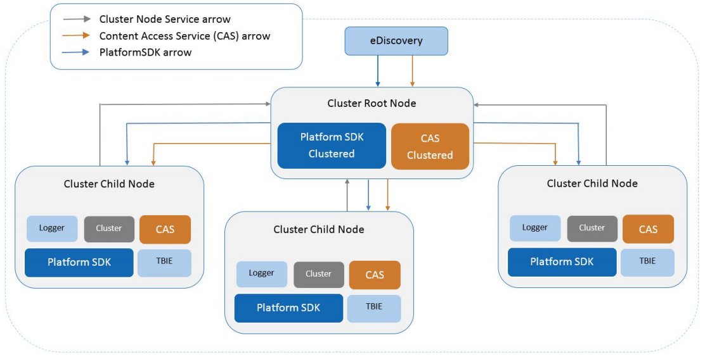

The ZyLAB Platform Cluster provides distributed Indexing, Searching and Content Access. A cluster consists
of one root node and one or more child nodes.
On each node, the ZyLAB Information Management
Platform will be installed. The root node hosts the clustered services (Platform SDK and Content Access).
